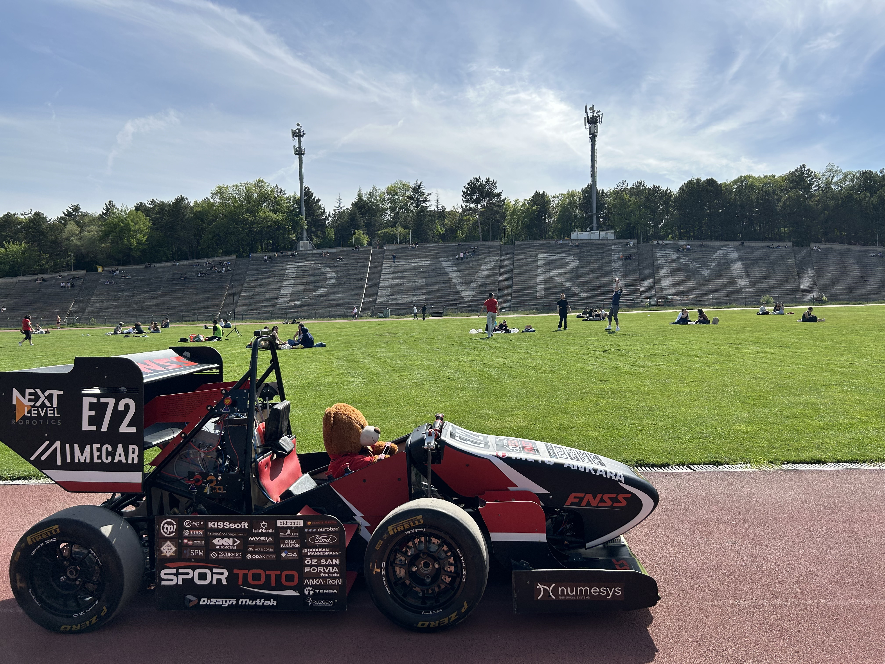
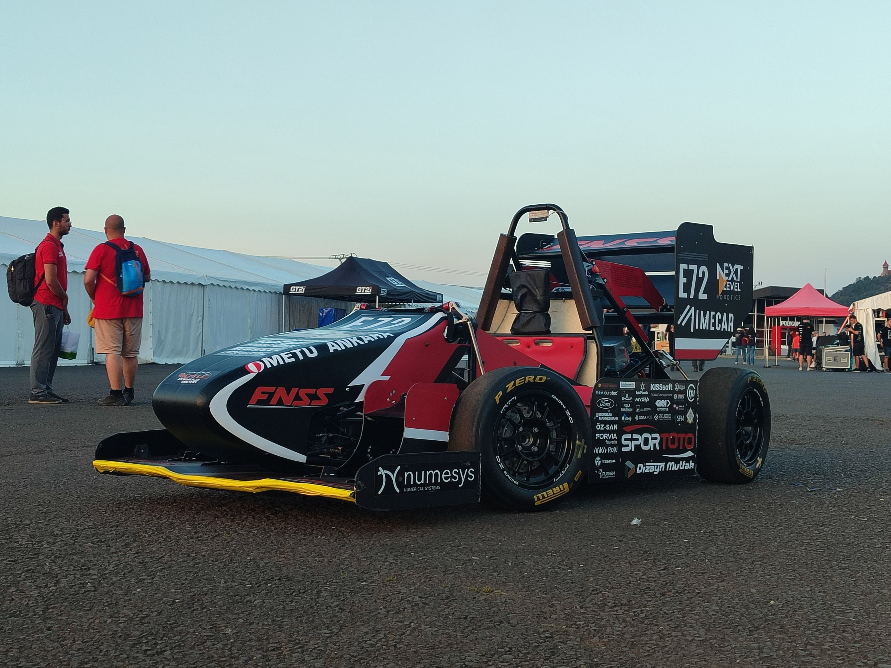
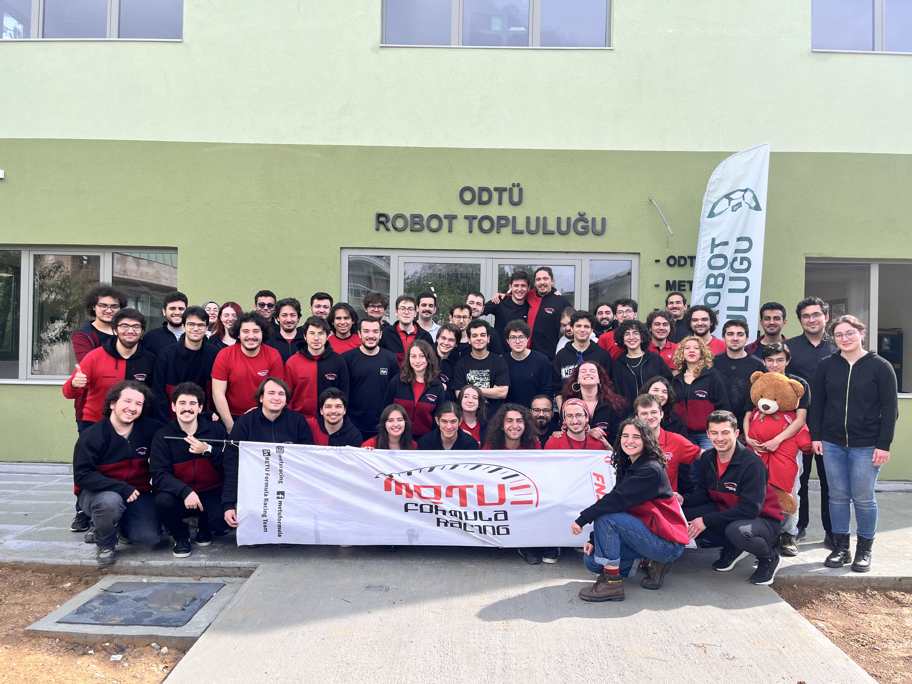

METU Formula Racing, Orta Doğu Teknik Üniversitesi’nin 2015 yılında kurulan Formula Student takımıdır. Kuruluş amacı, dünyadaki yüksek öğretim öğrencileri arasında, her yıl dünyanın birçok ülkesindeki yarış pistlerinde gerçekleştirilen bir mühendislik yarışması olan Formula Student etkinliklerine katılarak okulumuzu ve ülkemizi başarıyla temsil etmektir. Fakülte veya bölüm farkı gözetmeksizin öğrencilere sektör deneyimi sağlamak ve bu deneyimle birlikte yarış araçları üreterek araştırma-geliştirme altyapısı oluşturmak. Vizyonumuz: Yüksek performanslı yarış araçları üreterek ülkemize ve otomotiv endüstrisi başta olmak üzere çeşitli sektörlere kalifiye bireyler yetiştirirken, aynı zamanda uluslararası yarışmalarda dünyanın en iyi takımları arasında yer almak.
Dünyanın en köklü mühendislik yarışmalarından biri olarak bilinen Formula Student, ilk olarak 1988’de ABD’de düzenlenmiştir. Yarışmanın temel amacı, otomotiv ve motorsporları endüstrisine sektörel anlamda kalifiye eleman sağlamaktır. Yarışma, öğrencilerin Formula tarzı bir araç tasarlayıp inşa etmelerine ve dünyanın her yerinden okullara karşı rekabet etmelerine olanak tanır. Popülerliği ve kazandırdığı tecrübe sebebiyle tüm dünyaya yayılmış ve gözde mühendislik yarışmalarından biri haline gelmiştir. Öğrenciler, dereceli bir yarışmada yarışacak bir aracın tasarımından üretimine ve test edilmesine kadar aracın her yönünden sorumludur. Her yarışma, aracın performansını test eden ve öğrencilerin araç tasarımı, üretilebilirlik, maliyet ve pazarlama ile ilgili bilgilerini sorgulayan statik ve dinamik olaylardan oluşur.
Takımların yarış araçlarını ticari bir ürün olarak konumlandırarak yatırımcılara sunduğu bir iş planı etabıdır. İş fikri, pazar analizi, finansal sürdürülebilirlik ve teknik uygulanabilirlik kriterlerine göre değerlendirilir. Takımlar, 10 dakikalık sunum ve jüri ile yapılan soru-cevap oturumunda, mühendislik çözümlerini gerçek bir iş modeliyle nasıl entegre ettiklerini göstermeye çalışırlar.
Takımların araçlarının üretim süreçlerini, maliyet analizlerini ve seri üretim planlamalarını sundukları bir etaptır. Takımlar, maliyet tabloları, üretim yöntemleri ve optimizasyon stratejilerini jüriye sunarak mühendislik çözümlerinin ekonomik sürdürülebilirliğini kanıtlamaya çalışırlar. Jüri, maliyet etkinliği, üretim süreçlerinin doğruluğu ve ölçeklenebilirlik gibi kriterleri değerlendirir.
Takımların yarış araçlarının teknik tasarımını, mühendislik analizlerini ve uygulanan yenilikçi çözümleri jüriye sundukları bir etaptır. Yapısal dayanıklılık, aerodinamik, güç aktarma sistemi, süspansiyon ve elektrik/elektronik sistemler gibi alanlarda yapılan mühendislik çalışmaları detaylı şekilde incelenir. Jüri, tasarımın mühendislik prensiplerine uygunluğu, doğrulama yöntemleri ve optimizasyon süreçlerini değerlendirir.
Araçların yanal ivmelenme ve mekanik yol tutuş performanslarını ölçen dinamik bir etaptır. Araçlar, belirlenmiş çift sekiz (∞) şeklindeki pistte dönüş yaparak en hızlı süreyi elde etmeye çalışırlar. Etap, lastik yol tutuşu, süspansiyon ayarları ve ağırlık dağılımının etkinliği gibi faktörleri test eder. Araçların denge, hassasiyet ve tutuş kabiliyeti açısından değerlendirildiği bir etaptır.
Araçların 0-75 metre mesafede en hızlı kalkışı yaparak hızlanma performanslarını ölçen bir etaptır. Etap, güç aktarma sistemi, motor/elektrik tahrik verimliliği, aerodinamik direnç ve lastik yol tutuşu gibi faktörleri test eder. Takımlar, minimum süreyle bitiş çizgisine ulaşmayı hedeflerken, araçlarının çekiş kontrolü, tork yönetimi ve ağırlık dağılımı gibi dinamiklerini optimize etmek zorundadır. Güç-ağırlık oranı ve verimli tahrik sistemine sahip araçların öne çıktığı bir etaptır.
Araçların tek tur üzerinden hız, çeviklik ve yol tutuş performanslarının değerlendirildiği bir etaptır. Pist, düşük ve yüksek hızlı virajlar, şikanlar ve slalomlar içeren teknik bir düzenle sahiptir. Takımlar, en kısa sürede bitiş çizgisine ulaşarak süspansiyon ayarları, direksiyon tepkisi ve güç dağılımı gibi dinamik özelliklerini test eder. Araç kontrolü, hız ve sürüş hassasiyetinin öne çıktığı bir etaptır.
Araçların yaklaşık 22 km boyunca dayanıklılığını, yakıt/enerji verimliliğini ve genel performansını test eden en zorlu dinamik etaptır. Araçlar, değişken hızlarda virajlar ve düzlüklerden oluşan pistte arka arkaya iki sürücü tarafından kullanılır. Soğutma sistemleri, batarya/motor dayanıklılığı, süspansiyon güvenilirliği ve yakıt/enerji tüketimi gibi kritik faktörler değerlendirilir. Araçların uzun süreli performansını kanıtlaması gereken ve en yüksek puan getiren dinamik etaptır.
Yalnızca Driverless kategorisinde yer alan, otonom araçların hız, çeviklik ve dayanıklılığını test eden bir etaptır. Araçlar, önceden keşfedilmemiş bir pistte, herhangi bir dış müdahale olmadan belirlenen sayıda tur atarak en iyi süreyi elde etmeye çalışır. Algoritma optimizasyonu, sensör füzyonu, yol takibi ve dinamik kontrol sistemleri bu etapta kritik rol oynar. Otonom sürüş sistemlerinin güvenilirliği ve hız-performans dengesi açısından değerlendirildiği bir etaptır.
Araçların yakıt veya enerji tüketimi ile hız ve dayanıklılık performanslarını dengelediği bir etaptır. Endurance etabıyla birlikte değerlendirilir ve aracın harcanan enerjiye veya yakıta göre kat ettiği mesafe ölçülerek puanlanır. Aerodinamik tasarım, güç aktarma verimliliği, enerji yönetimi ve sürüş stratejisi gibi faktörler bu etapta belirleyici rol oynar. Düşük tüketimle yüksek performans sağlayan araçların öne çıktığı bir etaptır.